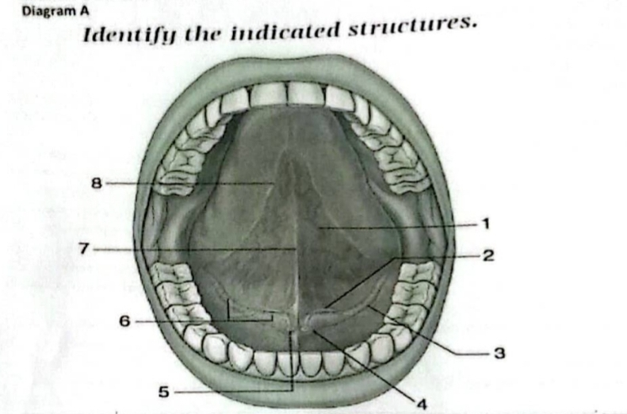
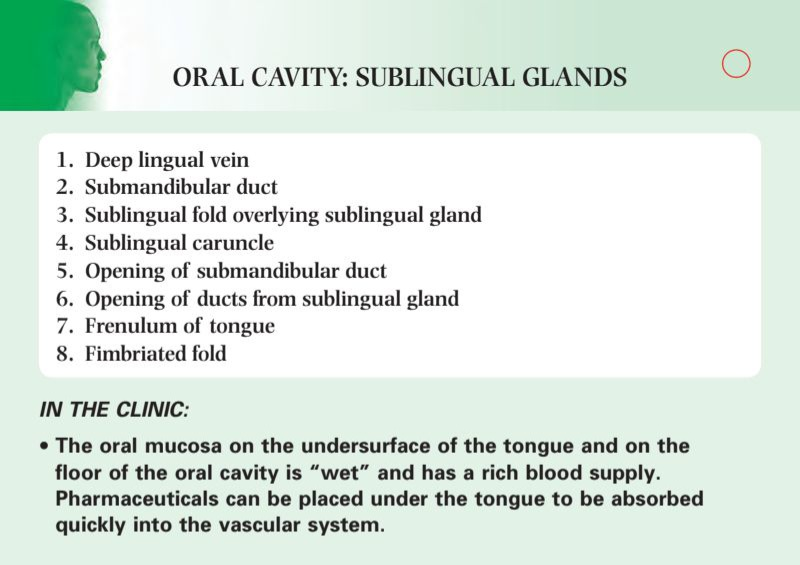
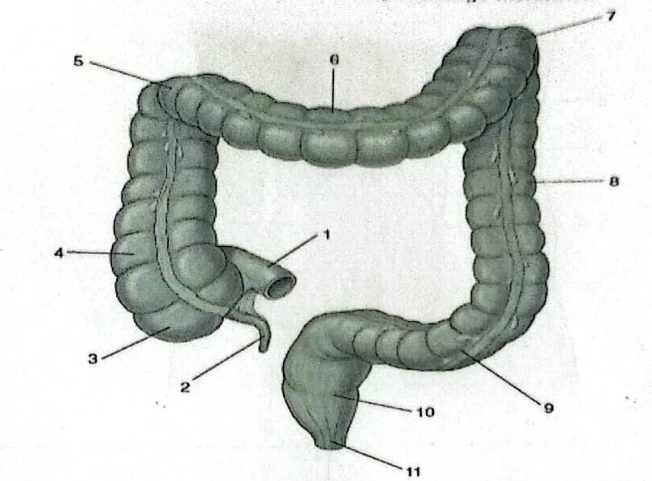
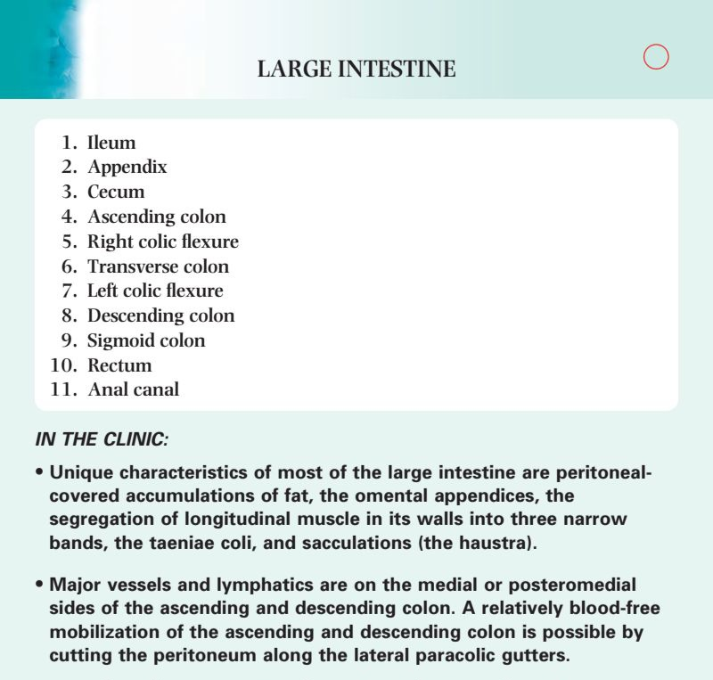
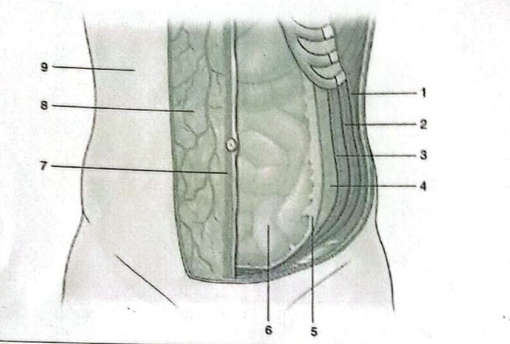
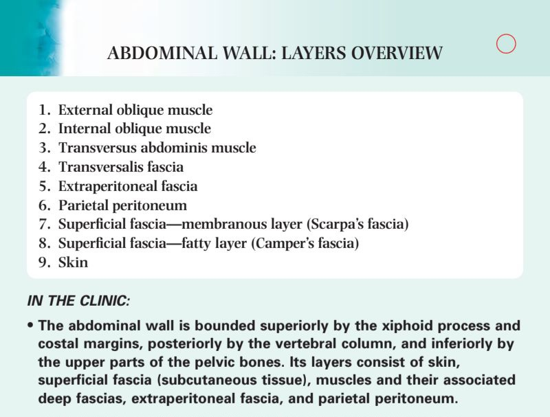

Multiple Choice Questions
60
Select the best answer for each question, then click Submit All MCQs below.
Your Score
0%
Review the feedback below each question.
Section B – Structured and Short Answer Questions
Write your answers in the boxes below. Click Show Answer to reveal a model answer.
Question B1 – Tooth Extraction
A Dentist was examining the 3rd right upper molar tooth of a young women, who reported to have been experiencing excruciating pain for a period of time. On examination it was observed that she had a tooth decay and gingiva infection. The solution was tooth extraction.
B. Which nerve is the Dentist going to inject anesthetic prior to extraction of the tooth (2 marks)
For the 3rd right upper molar, the Dentist will inject the Posterior Superior Alveolar (PSA) nerve. (2 marks)
C. What is the nerve supply to the upper and lower gingiva (4 marks)
Upper gingiva: Anterior, Middle, and Posterior Superior Alveolar nerves (branches of Maxillary V2).
Lower gingiva: Inferior Alveolar nerve (branch of Mandibular V3), and the Lingual nerve for the lingual aspect. (4 marks)
Lower gingiva: Inferior Alveolar nerve (branch of Mandibular V3), and the Lingual nerve for the lingual aspect. (4 marks)
Question B2 – Omphalocele vs Gastroschisis
A foetus born with some abdominal contents protruding outside the abdominal cavity, was been examined by a paediatrician and medical students. There was a debate among the students as to whether it was omphalocele or Gastroschisis.
A. what is the cause of each condition (4 marks)
Omphalocele: Failure of the midgut to return to the abdominal cavity during the 10th week of development, resulting in herniation into the umbilical cord.
Gastroschisis: A defect in the anterior abdominal wall (usually to the right of the umbilicus) due to failure of the lateral folds to fuse properly. (4 marks)
Gastroschisis: A defect in the anterior abdominal wall (usually to the right of the umbilicus) due to failure of the lateral folds to fuse properly. (4 marks)
B. Discuss the two conditions considering their key differences (8 marks)
1. Covering: Omphalocele is covered by a sac (amnion and peritoneum); Gastroschisis has no covering (bowel exposed).
2. Location: Omphalocele is at the umbilicus; Gastroschisis is usually paramedian (right of umbilicus).
3. Defect size: Omphalocele is a midline defect of the umbilical ring; Gastroschisis is a full-thickness abdominal wall defect.
4. Associated anomalies: Omphalocele is often associated with chromosomal abnormalities (e.g., Trisomy 13, 18, 21) and cardiac defects; Gastroschisis is rarely associated with other anomalies.
5. Prognosis: Omphalocele has a higher mortality due to associated anomalies; Gastroschisis has a better prognosis if surgically corrected. (8 marks)
2. Location: Omphalocele is at the umbilicus; Gastroschisis is usually paramedian (right of umbilicus).
3. Defect size: Omphalocele is a midline defect of the umbilical ring; Gastroschisis is a full-thickness abdominal wall defect.
4. Associated anomalies: Omphalocele is often associated with chromosomal abnormalities (e.g., Trisomy 13, 18, 21) and cardiac defects; Gastroschisis is rarely associated with other anomalies.
5. Prognosis: Omphalocele has a higher mortality due to associated anomalies; Gastroschisis has a better prognosis if surgically corrected. (8 marks)
Question B4 – Histology of Small Intestines
Describe the special histological structural features that facilitate the processes of digestion & absorption in the small intestines (6 marks)
1. Plicae circulares (valves of Kerckring): Permanent transverse folds of the mucosa and submucosa that increase surface area.
2. Villi: Finger-like projections of the mucosa, containing a core of lamina propria with capillaries and a central lacteal.
3. Microvilli (Brush border): Apical surface modifications of enterocytes that further increase surface area.
4. Crypts of Lieberkühn: Glands containing stem cells, Paneth cells, and enteroendocrine cells.
5. Brunner's glands: Found in the submucosa of the duodenum, secreting alkaline mucus.
6. Peyer's patches: Lymphoid follicles in the lamina propria and submucosa (especially in the ileum) for immune surveillance. (6 marks)
2. Villi: Finger-like projections of the mucosa, containing a core of lamina propria with capillaries and a central lacteal.
3. Microvilli (Brush border): Apical surface modifications of enterocytes that further increase surface area.
4. Crypts of Lieberkühn: Glands containing stem cells, Paneth cells, and enteroendocrine cells.
5. Brunner's glands: Found in the submucosa of the duodenum, secreting alkaline mucus.
6. Peyer's patches: Lymphoid follicles in the lamina propria and submucosa (especially in the ileum) for immune surveillance. (6 marks)
Diagram Section
Draw & Label
Draw the required anatomical structures and label them clearly. Click Show Answer for a model description.
Diagram 1

Label the diagram here:

Diagram 2

Label your diagram here:

Diagram 3

Draw your diagram here or describe it in detail:

Clinical Scenarios
Case-Based Learning
Read each scenario carefully and answer the questions. Click Show Answer for model answers.
Scenario 1 – Dental Anatomy
A Dentist was examining the 3rd right upper molar tooth of a young women, who reported to have been experiencing excruciating pain for a period of time. On examination it was observed that she had a tooth decay and gingiva infection. The solution was tooth extraction.
a) Which nerve is the Dentist going to inject anesthetic prior to extraction of the tooth? [2 marks]
Posterior Superior Alveolar (PSA) nerve.
b) What is the nerve supply to the upper and lower gingiva? [4 marks]
Upper gingiva: Anterior, Middle, and Posterior Superior Alveolar nerves (V2). Lower gingiva: Inferior Alveolar nerve and Lingual nerve (V3).
Scenario 2 – Embryological Defect
A foetus born with some abdominal contents protruding outside the abdominal cavity, was been examined by a paediatrician and medical students. There was a debate among the students as to whether it was omphalocele or Gastroschisis.
a) What is the cause of each condition? [4 marks]
Omphalocele: Failure of midgut to return to abdominal cavity. Gastroschisis: Defect in anterior abdominal wall folds.
b) Discuss the two conditions considering their key differences. [8 marks]
Covering: Omphalocele is covered by a sac; Gastroschisis has no covering. Location: Omphalocele is at the umbilicus; Gastroschisis is paramedian. Associated anomalies: Omphalocele has higher association with chromosomal abnormalities; Gastroschisis rarely has other anomalies.